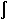

*VOPER, ParR, Par1, Oper, Par2, CON1, CON2
Operates on two array parameters.
Argument Descriptions
-
ParR The name of the resulting array parameter vector. See *SET for name restrictions.
-
Par1 First array parameter vector in the operation. May also be a scalar parameter or a literal constant.
-
Oper Operations:
- ADD--
Addition:
Par1+Par2.- SUB --
Subtraction:
Par1-Par2.- MULT --
Multiplication:
Par1*Par2.- DIV --
Division:
Par1/Par2(a divide by zero results in a value of zero).- MIN --
Minimum: minimum of
Par1andPar2.- MAX --
Maximum: maximum of
Par1andPar2.- LT --
Less than comparison:
Par1<Par2gives 1.0 if true, 0.0 if false.- LE --
Less than or equal comparison:
Par1
Par2gives 1.0 if true, 0.0 if false.- EQ --
Equal comparison:
Par1=Par2gives 1.0 if true, 0.0 if false.- NE --
Not equal comparison:
Par1≠Par2gives 1.0 if true, 0.0 if false.- GE --
Greater than or equal comparison:
Par1 Par2 gives 1.0 if true, 0.0 if false.
Par2 gives 1.0 if true, 0.0 if false.- GT --
Greater than comparison:
Par1>Par2gives 1.0 if true, 0.0 if false.- DER1 --
First derivative: d(
Par1)/d(Par2). The derivative at a point is determined over points half way between the previous and next points (by linear interpolation).Par1must be a function (a uniquePar1value for eachPar2value) andPar2must be in ascending order.- DER2 --
Second derivative: d2(
Par1)/d(Par2)2. See also DER1.- INT1 --
Single integral: 
Par1d(Par2), whereCON1is the integration constant. The integral at a point is determined by using the single integration procedure described in the Mechanical APDL Theory Reference.- INT2 --
Double integral:
Par1d(Par2), whereCON1is the integration constant of the first integral andCON2is the integration constant of the second integral. IfPar1contains acceleration data,CON1is the initial velocity andCON2is the initial displacement. See also INT1.- DOT --
Dot product:
Par1.Par2.Par1andPar2must each have three consecutive columns of data, with the columns containing the i, j, and k vector components, respectively. Only the starting row index and the column index for the i components are specified forPar1andPar2, such as A(1,1). The j and k components of the vector are assumed to begin in the corresponding next columns, such as A(1,2) and A(1,3).- CROSS --
Cross product:
Par1xPar2.Par1,Par2, andParRmust each have 3 components, respectively. Only the starting row index and the column index for the i components are specified forPar1,Par2, andParR, such as A(1,1). The j and k components of the vector are assumed to begin in the corresponding next columns, such as A(1,2) and A(1,3).- GATH --
Gather: For a vector of position numbers,
Par2, copy the value ofPar1at each position number toParR. Example: forPar1= 10,20,30,40 andPar2= 2,4,1;ParR= 20,40,10.- SCAT --
Scatter: Opposite of GATH operation. For a vector of position numbers,
Par2, copy the value ofPar1to that position number inParR. Example: forPar1= 10,20,30,40,50 andPar2= 2,1,0,5,3;ParR= 20,10,50,0,40.- ATN2 --
Arctangent: arctangent of
Par1/Par2with the sign of each component considered.- LOCAL --
Transform the data in
Par1from the global Cartesian coordinate system to the local coordinate system given inCON1.Par1must be an N x 3 (i.e., vector) or an N x 6 (i.e., stress or strain tensor) array. If the local coordinate system is a cylindrical, spherical, or toroidal system, then you must provide the global Cartesian coordinates inPar2as an N x 3 array. SetCON2= 1 if the data is strain data.- GLOBAL --
Transform the data in
Par1from the local coordinate system given inCON1to the global Cartesian coordinate system.Par1must be an N x 3 (i.e., vector) or an N x 6 (i.e., stress or strain tensor) array. If the local coordinate system is a cylindrical, spherical, or toroidal system, then you must provide the global Cartesian coordinates inPar2as an N x 3 array. SetCON2= 1 if the data is strain data.
-
Par2 Second array parameter vector in the operation. May also be a scalar parameter or a literal constant.
-
CON1 First constant (used only with the INT1 and INT2 operations).
-
CON2 Second constant (used only with the INT2 operation).
Notes
Operates on two input array parameter vectors and produces one output array parameter vector according to:
ParR = Par1 o Par2
where the operations (o) are described below. ParR may
be the same as Par1 or Par2.
Absolute values and scale factors may be applied to all parameters [*VABS, *VFACT].
Results may be cumulative [*VCUM]. Starting array element
numbers must be defined for each array parameter vector if it does not start
at the first location, such as *VOPER,A,B(5),ADD,C(3) which
adds the third element of C to the fifth element of B and stores the result
in the first element of A. Operations continue on successive array elements
[*VLEN, *VMASK] with the default being
all successive elements. Skipping array elements via *VMASK or *VLEN for
the DER_ and INT_ functions skips only the writing of the results (skipped
array element data are used in all calculations).
Parameter functions and operations are available to operate on a scalar
parameter or a single element of an array parameter, such as SQRT(B) or SQRT(A(4)).
See the *SET command for details. Operations on a sequence
of array elements can be done by repeating the desired function or operation
in a do-loop [*DO]. The vector operations within the ANSYS
program (*VXX
commands)
are internally programmed do-loops that conveniently perform the indicated
operation over a sequence of array elements. If the array is multidimensional,
only the first subscript is incremented in the do-loop, that is, the operation
repeats in column vector fashion "down" the array. For example, for A(1,5),
A(2,5), A(3,5), etc. The starting location of the row index must be defined
for each parameter read and for the result written.
The default number of loops is from the starting result location to the last result location and can be altered with the *VLEN command. A logical mask vector may be defined to control at which locations the operations are to be skipped [*VMASK]. The default is to skip no locations. Repeat operations automatically terminate at the last array element of the result array column if the number of loops is undefined or if it exceeds the last result array element. Zeroes are used in operations for values read beyond the last array element of an input array column. Existing values in the rows and columns of the results matrix remain unchanged where not changed by the requested operation values. The result array column may be the same as the input array column since results in progress are stored in a temporary array until being moved to the results array at the end of the operation. Results may be overwritten or accumulated with the existing results [*VCUM]. The default is to overwrite results. The absolute value may be used for each parameter read or written [*VABS]. A scale factor (defaulting to 1.0) is also applied to each parameter read and written [*VFACT].
This command is valid in any processor.